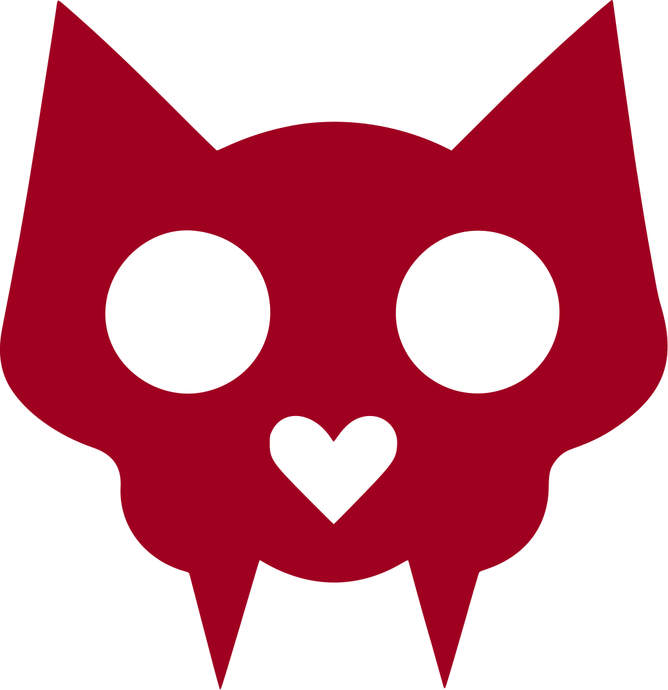
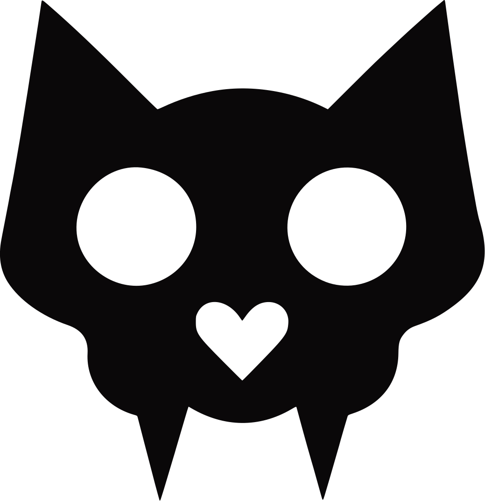

Marca personal
El logo de Michelle: una calavera de gato. Es «michi» y es calavera al mismo tiempo. Va sola, sin círculo ni marco: el contorno ya es la figura, y las cuencas y el corazón son huecos reales.
Rojo, blanco y negro, como las entregó ella. Cada una sobre el fondo para el que sirve.

Rojo · sobre azabache
Blanco · sobre azabache

Negro · sobre hueso
En blanco cuando el fondo es el rojo profundo del sitio.
La prueba de verdad de un logo: que a 16 px siga siendo reconocible. Por eso las cuencas son tan grandes.
La misma del portafolio, salida de su propia pieza Kaomi Arcana. El carmín es el único color vivo y se usa con cuentagotas.
Sí
No